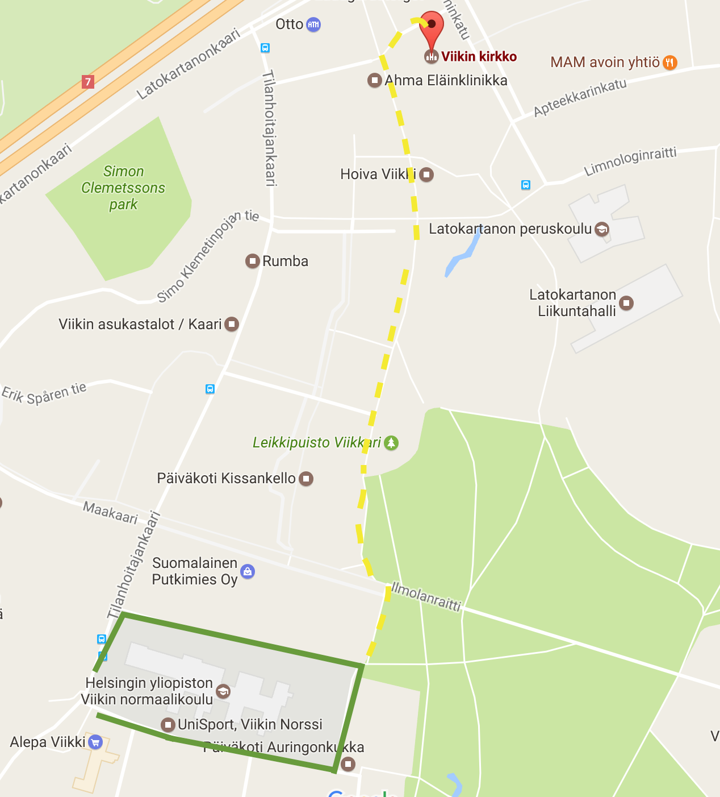

Lotta / 045 2345 580 / lotta.luoto@gmail.com
Heikki / 040 845 3802 / hkorhone@gmail.com
Kirkon parkkipaikka (13 autopaikkaa) on kadun varressa kirkon itäpäädyssä os. Agronominkatu 5. Paikoissa on teksti ’kirkkovieraille’.
Agronominkadun eteläpäässä, 200 metriä kirkolta, on noin 30 kiekollista neljän tunnin pysäköintipaikkaa. Lisäksi Tilanhoitajankaaren varrella on yksittäisiä neljän tunnin kiekollisia pysäköintipaikkoja.
Lisäksi olemme saaneet luvan käyttää Helsingin yliopiston Viikin normaalikoulun (os. Kevätkatu 2) parkkipaikkoja (kuvassa ympyröity alue).
Latokartano on pysäkointikieltoaluetta, joten vain merkityille paikoille saa pysäköidä.
